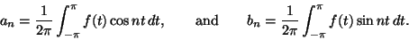
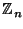

For many functions, we can reconstruct f from its Fourier coefficients, by using the Fourier series. In the case of a string fixed between two points, and initially held in a shape which is the graph of f, the Fourier (sine) coefficients have a physical interpretation; they represent the amount of the corresponding harmonic in the resulting vibration.A trick often used to unite the Fourier sine and cosine series, even for real functions, is to define the complex Fourier coefficient
In this section we apply these ideas to the discrete Fourier transform, the version which applies to a function f defined on the finite set . As in the continuous case, it is helpful to think of the function as being periodic, so that f (j + n) = f (j). The discrete transform has the advantage that we no longer have convergence worries; of course a finite sum exists, while an integral may not: but it does mean that the formulae are less familiar.